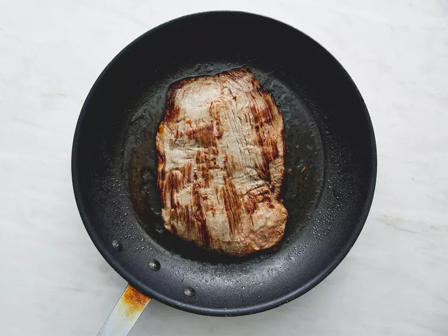
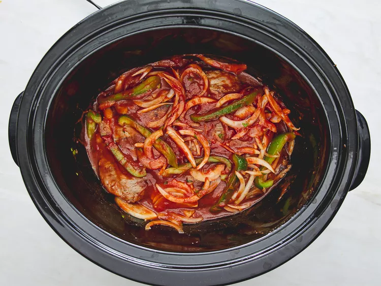
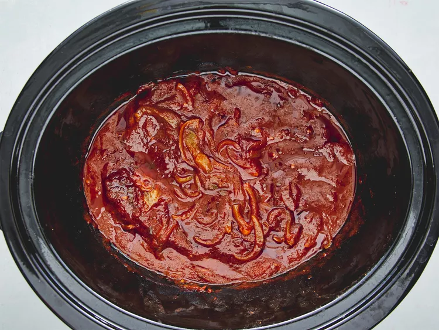

This ropa vieja is great served on tortillas or over rice. Add sour cream, cheese, and fresh cilantro on the side.
It is an amazing addition to your recipe book that brings some culture into your kitchen. Find it Where savory meets a taste that is unbelievable.




Make sure to serve warm and with plenty of love and do not serve cold, it will not taste the same